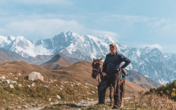
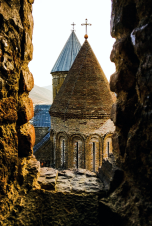
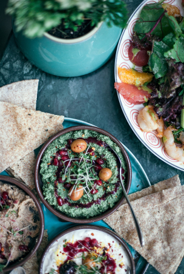

10 золотых правил для поездки в Грузию
15 мин 16 129
Сегодня мы подготовили для вас топ-10 правил поездки в Грузию. Мы надеемся, что эта статья развеет некоторые заблуждения и ложные ожидания и сделает ваш отдых в Грузии волшебным.
-
Грузинское гостеприимство
Очень часто встречаются отзывы, что нет никакого грузинского гостеприимства. Чаще всего - от людей, которые сами не умеют дружить и быть радушными.
Запомните: грузинское гостеприимство работает по полной, если вы сами готовы открыться и быть другом.
-
Хорошие экскурсии
Чтобы не разочароваться в экскурсионной программе, стоит заранее позаботиться о выборе гида. К сожалению, в Грузии нет обязательной сертификации гидов и экскурсионных бюро, поэтому есть вероятность нарваться на непрофессионалов.
 -
Вкусная еда
Многие полагают, что в Грузии они смогут есть вкусную еду и пить вино на каждом шагу, при этом тратя на это сущие копейки. Это не так.
В Грузии действительно можно найти недорогие и хорошие кафе, а также рестораны, но для этого нужно читать отзывы и рекомендации. Так вы не разочаруетесь в грузинской кухне и не получите пищевое отравление, а вместо этого приобретете только приятные впечатления и сытость для прогулок.
 -
Быстрый сервис
С этим нужно просто смириться. В Грузии, как впрочем и других регионах Кавказа, не привыкли торопиться. Вам стоит набраться терпения и принять с улыбкой нерасторопных сотрудников.